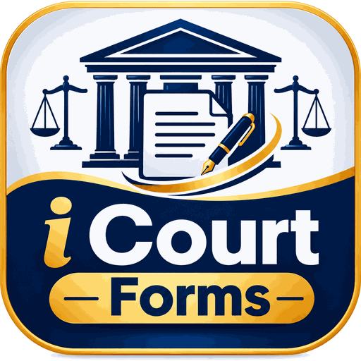

Privacy Policy
i Court Forms · Last updated: 23 November 2026
This policy explains what personal data the i Court Forms app collects and how it is used. The app is provided by Mohammad Rafiq Azad, Advocate, Chamber No. 786 & 92, District & Sessions Court, Jalandhar, Punjab, who is responsible for this data. We handle personal data in line with the Digital Personal Data Protection Act, 2023.
In short: the details of your cases and clients never leave your phone. We only keep your Google sign-in (name, email, photo), whether your access is approved, and a simple record of how the app is used (when it is opened and which buttons are pressed).
1. What we collect
- Your Google sign-in details: name, email address, profile photo link and the time you last signed in. This is how you request access, and how we see and approve requests.
- Your access status: whether your access is approved or removed, and when.
- How the app is used: when the app is opened, which screens are shown and which buttons are pressed (for example “PDF”, “Save”, “My cases”), the form, page orientation and language of a download and how many of its boxes were filled, the type of device and browser (for example “Android · Chrome”), a random number kept in the app on your device (so that one device is counted once; it does not identify you), whether the app is installed, and the app language. This is linked to your Google account when you are signed in; before sign-in it is recorded without a name. It never includes anything you type into a form, your cases, your clients or your files.
We do not collect your phone number, location, contacts or files, and we do not use advertising tools or third-party trackers. The usage record is kept by the app itself and only the owner can see it.
2. What stays only on your device
The following are saved only in the app’s storage in your own browser or phone, and are never sent to us:
- everything you type into a form (names, case numbers, FIR details and other particulars);
- your saved cases (“My cases”), your client book and their cases, and “My details”;
- field suggestions, your language choice and the Word / PDF files you download.
Clearing your browser data or uninstalling the app deletes this data from the device. A backup file you download stays wherever you keep it; please keep it safe, because it contains your clients’ details.
3. How we use your data
- to sign you in and keep you signed in;
- to show your request to the owner and let the owner approve or remove access;
- to contact you about your access, if needed;
- to understand how the app is used (how often it is opened, which forms and buttons are used) so that it can be improved and problems can be found.
We do not sell, rent or share your data with anyone for marketing.
4. Where it is stored
Sign-in and access records and the usage record are stored with Google Firebase (Google Cloud), used here for Google sign-in, the access list and the usage record. The app itself is served from GitHub Pages and Firebase Hosting.
5. How long we keep it
We keep your sign-in and access records while you use the app. If you ask us to delete them, or your access is removed and you ask, we delete them. The usage record is deleted automatically after 6 months, or earlier if you ask.
6. Your rights
You can ask us to tell you what we hold about you, correct it, or delete it, and you can withdraw your consent by asking us to delete your account record. Contact us using the details below.
7. Changes
We may update this policy. The date at the top shows the latest version.
8. Contact
Mohammad Rafiq Azad, Advocate
Chamber No. 786 & 92, District & Sessions Court, Jalandhar, Punjab
Mobile: 7009646869